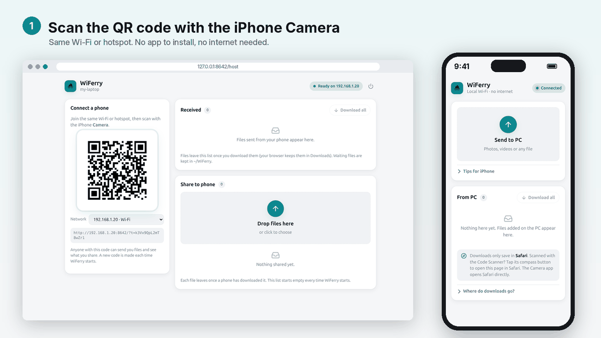
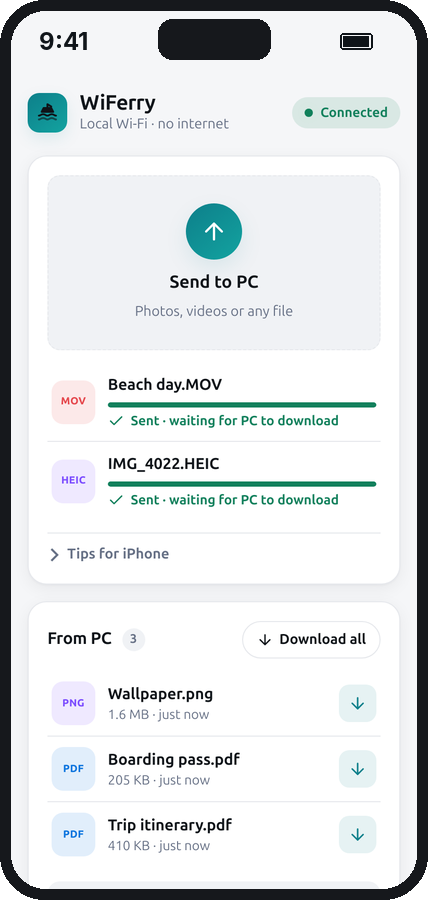
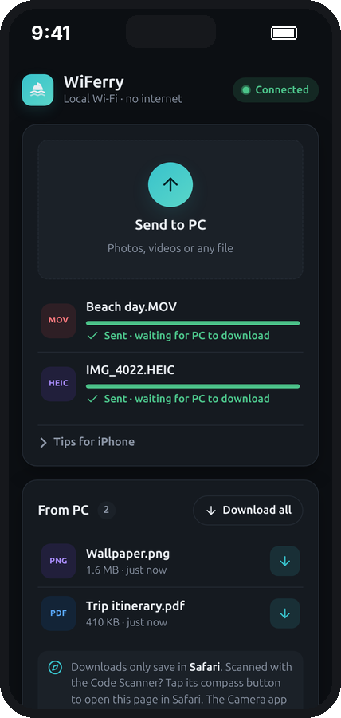

Send photos, videos and files between an iPhone and a Windows or Linux PC over Wi-Fi. Scan a QR code and go.
Windows ·
Linux ·
Linux ARM (Raspberry Pi)
About 8 MB · no installer · runs on your PC, not the phone

The problem
AirDrop is great, if every device you own is made by Apple. Everyone else with an iPhone and a Windows or Linux PC ends up doing one of these:
Photos get shrunk, attachments hit size limits, and your inbox fills with "IMG_4821".
Your files travel to a data centre and back to reach a laptop on the same desk. Slow, and it needs internet.
Then the drivers. Then the "Trust this computer" prompt. Then a folder full of DCIM subfolders.
An app on the phone, another on the PC, maybe an account, and you hope they're still maintained next year.
The solution
WiFerry runs a tiny private web page on your PC. Your iPhone already has a camera and a browser, and that's all it needs.
Double-click WiFerry. A page opens with a QR code. Nothing to install.
Point the iPhone camera at the QR and tap the link. It opens in Safari.
Pick photos, videos or files to send to the PC, or tap files the PC shares to save them on the phone.


Why open source
Moving your own files between your own devices, in your own home, is not a service. It shouldn't need a subscription, an account, an ad, or a trip through someone else's server.
WiFerry is free and MIT licensed, and the whole source is public. That matters for a tool that touches your photos. You don't have to trust a privacy policy: you, or anyone, can read exactly what it does. And if I ever stop working on it, it doesn't die with me. Anyone can fork it, fix it and keep it going.
If WiFerry saved you a cable hunt, you can say thanks with a ⭐ on GitHub so others can find it, a bug report from your device, or a pull request.
No analytics, no telemetry, no phoning home. It never talks to the internet.
Nothing to sign up for, nothing to log in to, nothing stored about you.
No pro tier, no ads, no "free trial". The code is yours under the MIT license.
How it compares
These are all good open-source projects. WiFerry is for when you want nothing on the phone and nothing on the internet.
| WiFerry | LocalSend | PairDrop | KDE Connect | |
|---|---|---|---|---|
| App needed on iPhone | No | Yes | No | Yes |
| Works with no internet | Yes | Yes | Only self-hosted | Yes |
| PC side | One file | App | Browser + server | App |
| Finding devices | Scan a QR | Automatic | Automatic | Automatic |
FAQ
Each launch makes a new random code inside the QR. Without it, other devices on the Wi-Fi see "Not connected". Phones can only send files and fetch what you chose to share; they can't browse your PC. Traffic is plain HTTP on your local network, so use it on networks you trust, like home or your own hotspot.
WiFerry never compresses. Photos keep full resolution, though iOS may convert HEIC to JPEG when you pick from Photos. For exact originals, save them to Files first and use Choose File.
That file stops cleanly and gets a Retry button; finished files stay done. Keep the screen on for big videos. Resumable uploads are on the roadmap.
WiFerry is new and not code-signed yet. In Edge's Downloads, click the ⌄ next to Delete → Keep anyway. If a blue SmartScreen box appears, click More info → Run anyway.
Not released yet. It builds on macOS from source, and testers are welcome.
Download, run, scan. That's it.